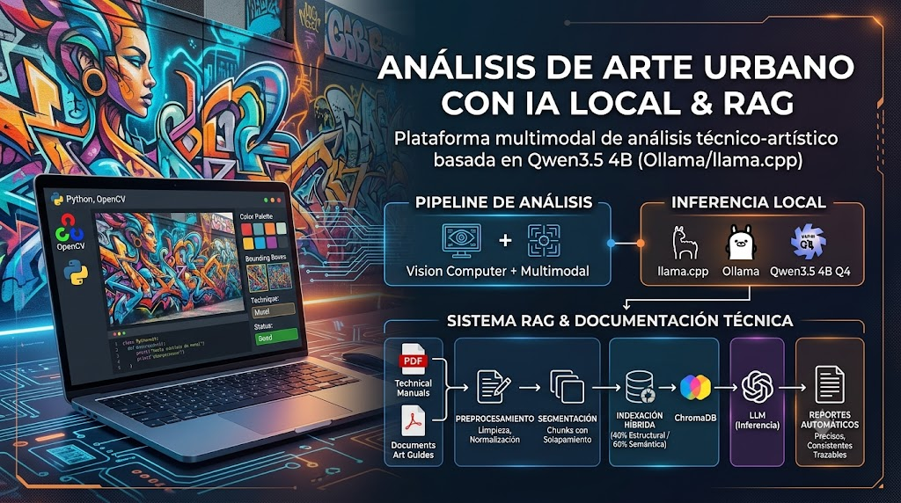

Research Project
Curador de Arte Urbano
Technical-artistic analysis platform based on generative AI, computer vision, RAG, and multimodal language models for the automated generation of reports on urban art works.
01 — Description
Urban art analysis with artificial intelligence
Curador de Arte Urbano is a platform designed to analyze urban art works using generative artificial intelligence techniques. It integrates computer vision, large language models (LLMs), retrieval-augmented generation (RAG), and multimodal processing to produce automated technical-artistic reports.
I designed and implemented a technical-artistic analysis solution based on locally executed generative AI, combining an image analysis pipeline developed in Python and OpenCV with a local inference engine based on llama.cpp and Ollama. The main model used is Qwen3.5 4B quantized (Q4), selected to optimize memory consumption, reduce inference times, and maintain high performance on resource-limited equipment, without depending on cloud AI services.
I conducted comparative tests with models such as Gemma4, Qwen3.6, and LLaVA to identify the option with the best balance between performance and response quality. In addition, I designed a Prompt Engineering strategy based on structured and contextualized prompts, enriched with information extracted during image processing: color palette, color distribution, pictorial techniques, composition, typography, state of conservation, and semantic elements. This approach reduced the variability of the model's responses and produced more precise, consistent analyses aligned with technical-artistic criteria.
The system allows characterizing the visual composition of works, extracting color palettes, identifying technical elements, and generating contextual analyses enriched with specialized knowledge stored in a vector database.
02 — RAG Pipeline
Retrieval-Augmented Generation
Preprocessing
Normalization of PDF content by removing special characters, typographic noise, and irrelevant elements before indexing.
Segmentation
Document splitting into overlapping chunks, preserving context between fragments to maximize information retrieval.
Hybrid selection
Combined evaluation of structural similarity (40%) and semantic similarity through embeddings (60%), with a minimum threshold of 70%.
Indexing
Storage of selected chunks in ChromaDB to build a specialized and updatable vector database.
Inference
During inference, the system performs Top-K searches over the vector database to retrieve contextual evidence that complements the language model's queries. This improves response accuracy, increases traceability, and allows knowledge to be updated without retraining the base model.
03 — Architecture
System components
The platform combines multiple artificial intelligence components for the technical-artistic analysis of urban art works:
- Chromatic analysis engine with Python and OpenCV, using K-Means and CIELAB, HSV, and RGB color spaces to extract color palettes.
- RAG pipeline with ChromaDB, specialized embeddings, and Top-K retrieval to enrich the model's responses.
- Local LLM execution through Ollama and llama.cpp, evaluating multimodal models according to their capabilities.
- Prompt Engineering to improve the consistency, quality, and specificity of generated analyses.
04 — Technologies
Tech stack
Language
Python
Computer vision
OpenCV, K-Means, CIELAB, HSV, RGB
Local LLMs
Ollama, llama.cpp
Vector database
ChromaDB
Retrieval
RAG, Embeddings, Top-K
Prompt Engineering
Prompt design and optimization
05 — Gallery
Platform view

06 — Contact
Questions about Curador de Arte Urbano?
If you are interested in learning more about the RAG pipeline, chromatic analysis, or the multimodal models used, contact me.